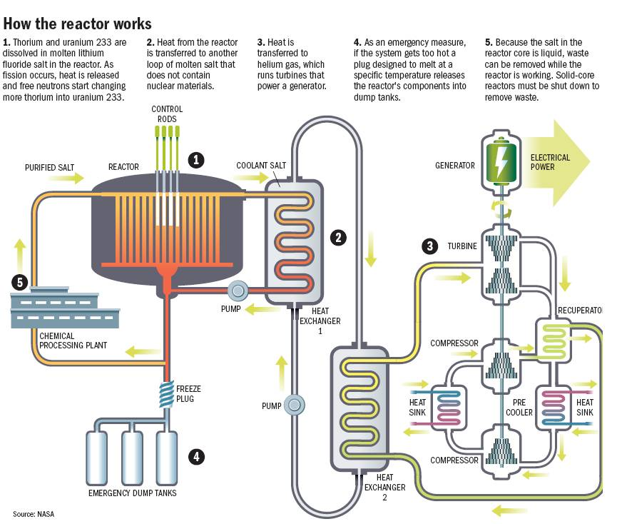

Power plays a fundamental role in any society, and its clean generation is necessary for a sustainable one.
Currently, Japan imports almost all of its oil, and is one of the world's largest importers of Liquefied Natural Gas and coal. These fossil fuels have a large carbon footprint, and are also expensive due to Japan's limited natural resources.
Liquid Fluoride Thorium Reactors (LFTR) offer numerous advantages over Light Water Reactors (LWR). Thorium is relatively common in the earth's crust, and cannot easily be weaponised. It is also able to operate at normal atmospheric pressure, and is a safer reactor due to thorium's physical properties. They entail little to no risk of a nuclear meltdown, and can produce higher operating temperatures.
The principle by which LFTR works is similar to that of conventional reactors, where a turbine is spun to generate electricity.
 SourceThorium and uranium is dissolved in other salts, and this liquid is pumped between the core and the heat exchanger. A secondary salt transfers the heat to a steam turbine. To prevent a nuclear meltdown, frozen salt is placed beneath.
Monazite is an important ore containing Rare Earth Metals, although it is not commercially viable due to its high concentration of radioactive thorium. Monazite ore is a potential source of thorium to power nuclear reactors.
Monazite contains thorium diphosphate, Th(PO4)2. Thorium can be extracted by adjusting the pH level of monazite dissolved in acid from other rare earth metals.
Breeder Reactors are able to produce more fissile material than it consumes. They have higher fuel economy than current light water reactors. For example, plutonium-239 can be bred from uranium-238 as U-328 can be efficiently converted into Pu-239 by neutrons from the fission chain reaction.
{kind=link}